x<-seq(-1,2,length=100)
y<-dunif(x,min=0,max=1,)
plot(x,y,type='l')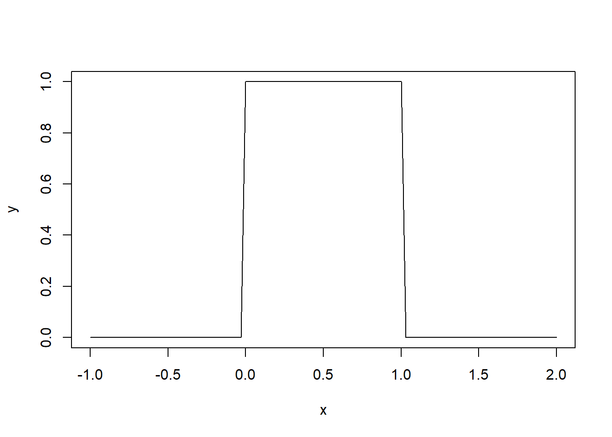
During World War II, the Allied Forces analyzed the markings/serial numbers found on captured German equipment to see if they could determine the strength of the German forces. Specifically, they examined the serial numbers found on tanks. Allied spies were instructed to record the serial numbers of any German tanks they observed in the field. The Allied statisticians made an assumption: that the Germans had sequentially numbered their tanks in the order in which they were produced (this turned out to be true).
Without loss of generality, assume the serial numbers were \(1,2,3,\dots, N\). When a tank was observed, the Allied forces recorded the serial number and developed an procedure to estimate \(N\). Let’s suppose that when one spy returned from her mission and was de-briefed, she reported the following observed serial numbers: 5, 12, 32, 43, 49, 54.
In small groups, discuss the following:
We’re going to need to remember a lot of concepts from STAT 262. We’ll start with this one:
The multinomial distribution is characterized by:
\(n\) identical, independent trials
Each trial results in one of \(k\) outcomes
An outcome of type \(i\) has probability \(p_i\), where \(p_1+p_2+\cdots+p_k = 1\) and \(p_i\) is constant from trial to trial
The random variables of interest are \(Y_1,Y_2,\dots, Y_k\), where \(Y_i\) is the number of trials resulting in outcome \(i\) (Note: \(Y_1 + \cdots +Y_k = n\))
pmf:
\(f_{Y_1,\dots,Y_k}(y_1,\dots,y_k;n,p_1,\dots,p_k) = \left \{ \begin{array}{ll} & y_i=0,1,2,\dots,n \\ \frac{n!}{y_1! y_2! \cdots y_k!} p_1^{y_1} p_2^{y_2} \cdots p_k^{y_k} & y_1+\cdots+y_k = n \\ & i=1,\dots,k\\ & \\ & \\ 0 & \hbox{otherwise} \end{array} \right .\)
Why are we thinking about the multinomial? It turns out to be useful in finding the distribution of order statistics.
While the sample mean and sample variance can be very useful quantities in many situations, they are not always the most appropriate statistics for a particular research question. In the German tank problem, we were interested in estimating the total number of tanks the Germans had produced. A spy observed the following serial numbers: 5, 12, 32, 43, 49, 54.
If we want to make inferences about a parameter, we need to know the distribution of the statistic/estimator we’re using. Last semester, we derived the distributions of the sample mean and sample variance, as well as the distributions of some functions of these statistics. Now, we’ll turn our attention to the distributions of order statistics, such as the sample maximum. You’ve already seen these! You worked with them on the STAT 262 final project.
The order statistics of a random sample \(X_1,X_2,\dots,X_n\) are the sample values placed in ascending order. They are denoted by:
Example: A snow storm goes through Lincoln, and drops 10 inches of snow. Consider \(n=5\) randomly selected neighborhoods in Lincoln, and let \(X_i\) be the time (in hours, from the time the snow stops falling) until neighborhood \(i\) is visited by the city snowplows. Assuming independence (realistic?), the observed times are \((x_1,x_2,x_3,x_4,x_5) = (12, 7, 72, 33, 20)\). In this case, the actual observations for each neighborhood are denoted \(x_2=7\), \(x_1=12\), \(x_5=20\), \(x_4=33\), \(x_3=72\). However, we can also consider the “ordered” random sample:
\[\begin{eqnarray*} \hbox{In general, \hspace{5mm} } X_{(1)} &=& \hbox{\hspace{120mm}} \\ & & \\ X_{(2)} &=& \\ & & \\ &\vdots& \\ & & \\ X_{(n)} &=& \end{eqnarray*}\]
Some commonly used order statistics (and functions of order statistics) include:
However, in order to make inferences about a parameter, we need to know the distribution of the corresponding statistic/estimator. Why?
Let’s consider some different distributions. Let’s start with the Uniform.
x<-seq(-1,2,length=100)
y<-dunif(x,min=0,max=1,)
plot(x,y,type='l')
Let’s first consider \(X_{(1)}\), from samples of both \(n=2\) and \(n=100\).
library(ggplot2)
unisample<-data.frame(sim=1:1000,min2=NA,min100=NA)
for(i in 1:1000){
data1<-runif(2,min=0,max=1)
data2<-runif(100,min=0,max=1)
unisample$min2[i]<-min(data1)
unisample$min100[i]<-min(data2)
}
ggplot(unisample, aes(min2)) + geom_histogram()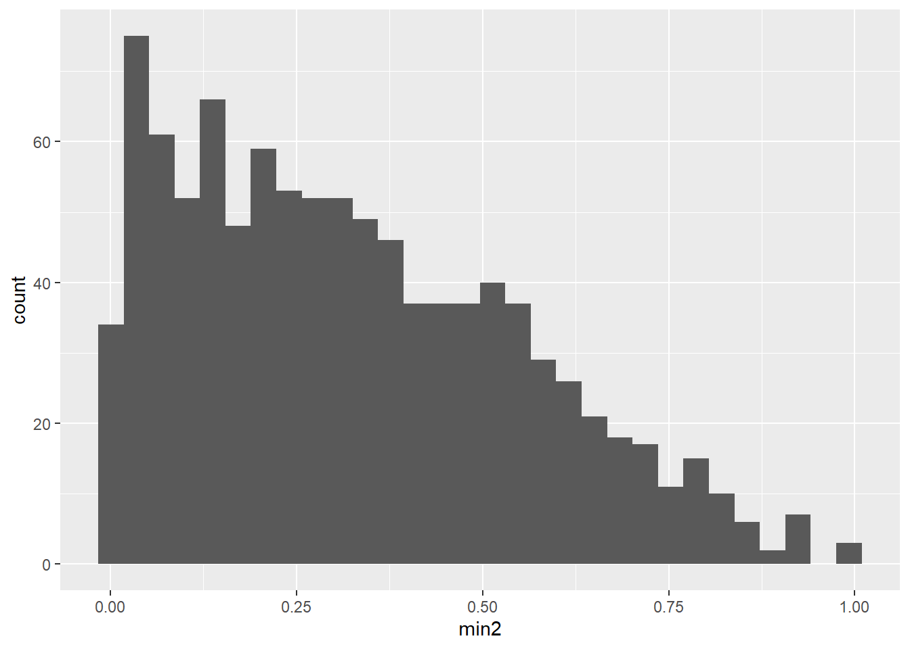
ggplot(unisample, aes(min100)) + geom_histogram()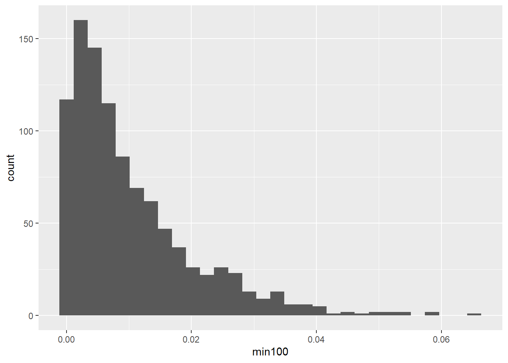
What do you think the (empirical) distribution of the max, \(X_{(n)}\) would look like?
curve(dexp(x,rate=0.2),from=0, to=10)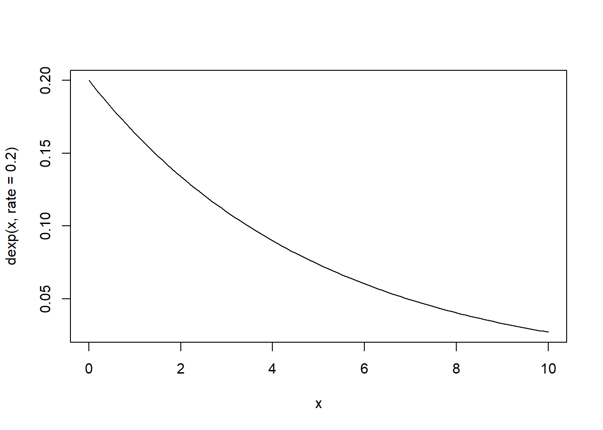
Again, let’s consider \(X_{(1)}\), from samples of both \(n=2\) and \(n=100\).
library(ggplot2)
expsample<-data.frame(sim=1:1000,min2=NA,min100=NA)
for(i in 1:1000){
data1<-rexp(2,rate=0.2)
data2<-rexp(100,rate=0.2)
expsample$min2[i]<-min(data1)
expsample$min100[i]<-min(data2)
}
ggplot(expsample, aes(min2)) + geom_histogram()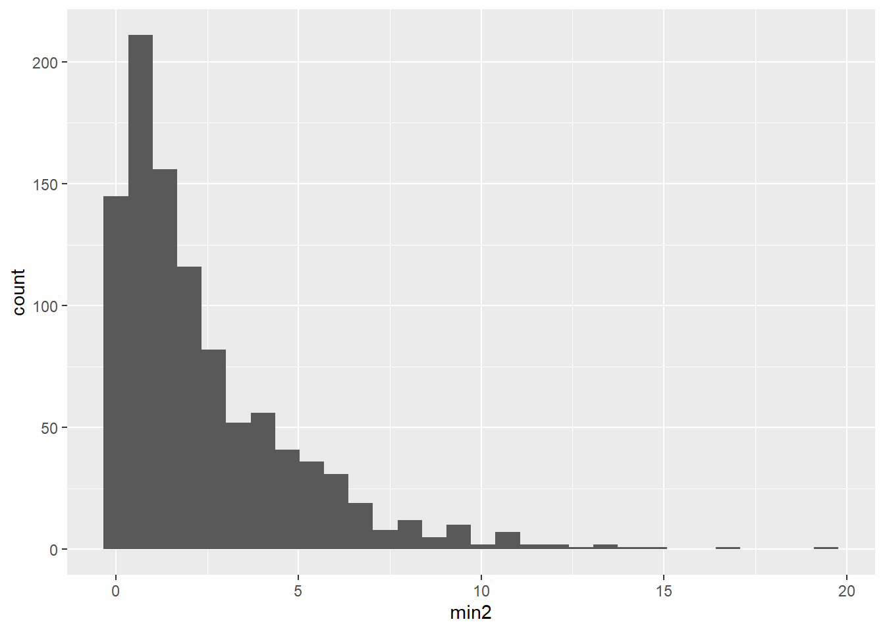
ggplot(expsample, aes(min100)) + geom_histogram()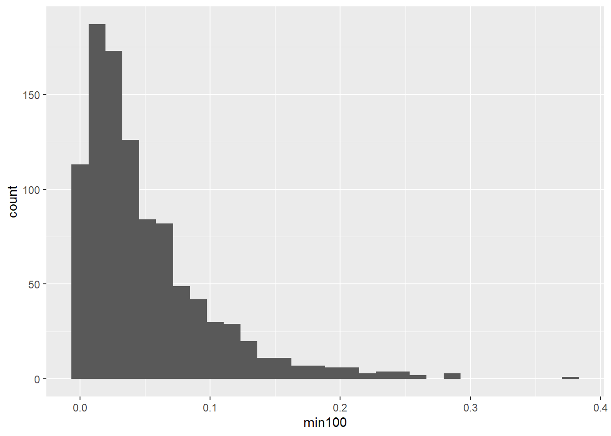
What about \(X_{(n)}\) in this case?
What factors seems to influence what the distribution of an order statistic looks like?
We’ll derive the theoretical distribution of a min and max through our uniform distribution example, and then we’ll generalize to any distribution (and any order statistic).
Example: Let \(X_1,\dots, X_n\) be a random sample from the Uniform(0,1) distribution.
So, for a random sample of Uniform(0,1) random variables
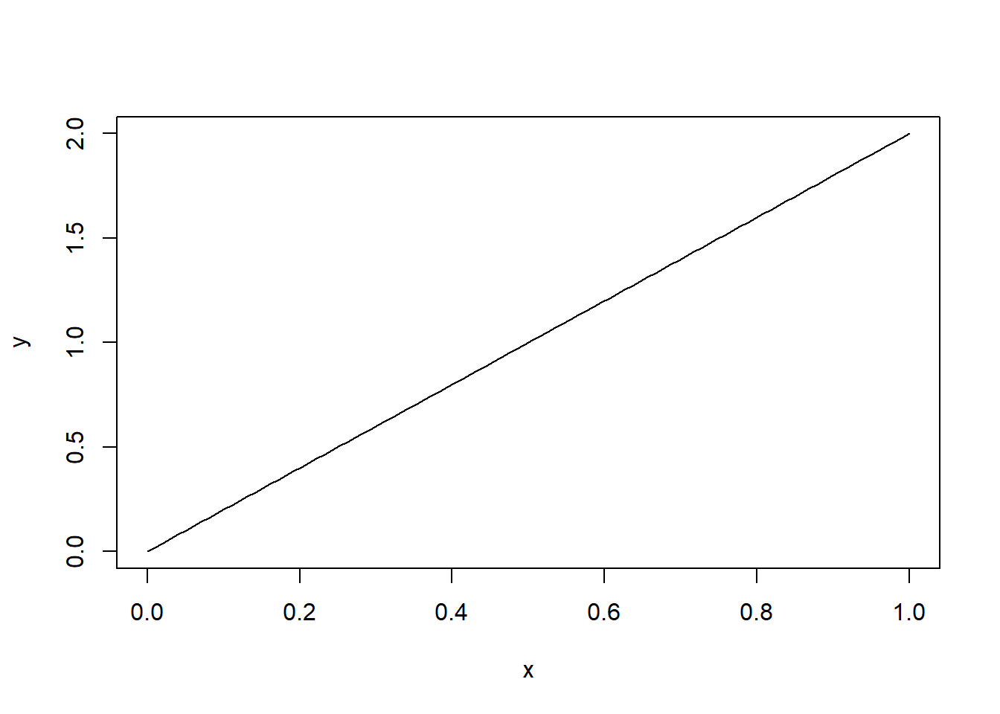
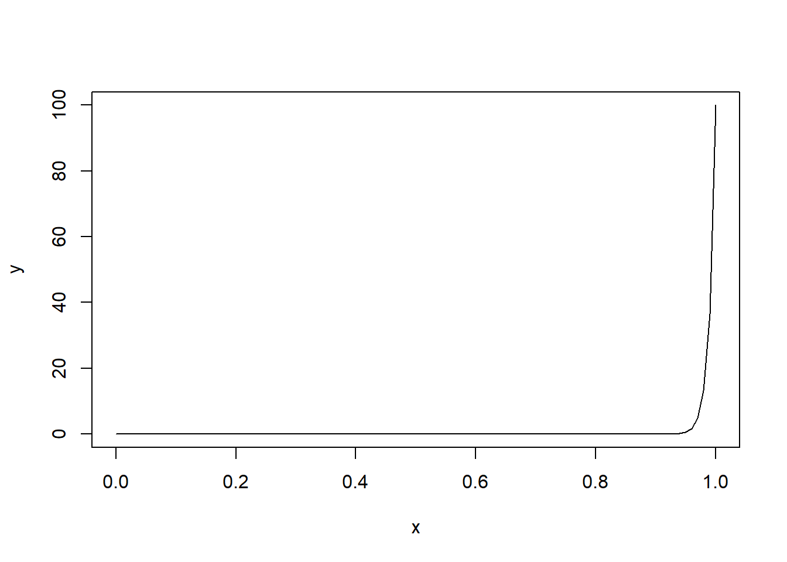
Example: Now, let’s try the min.
So, for a random sample of Uniform(0,1) random variables
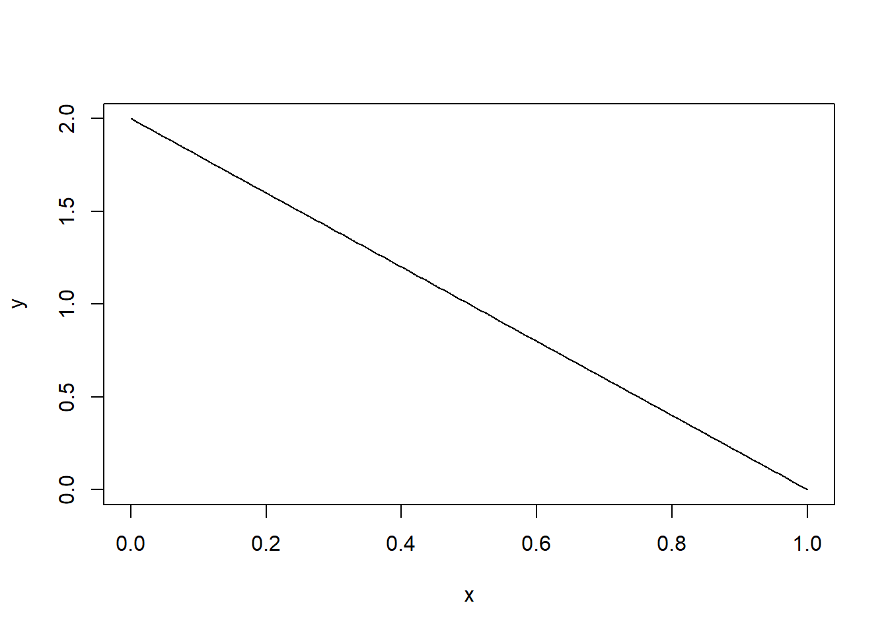
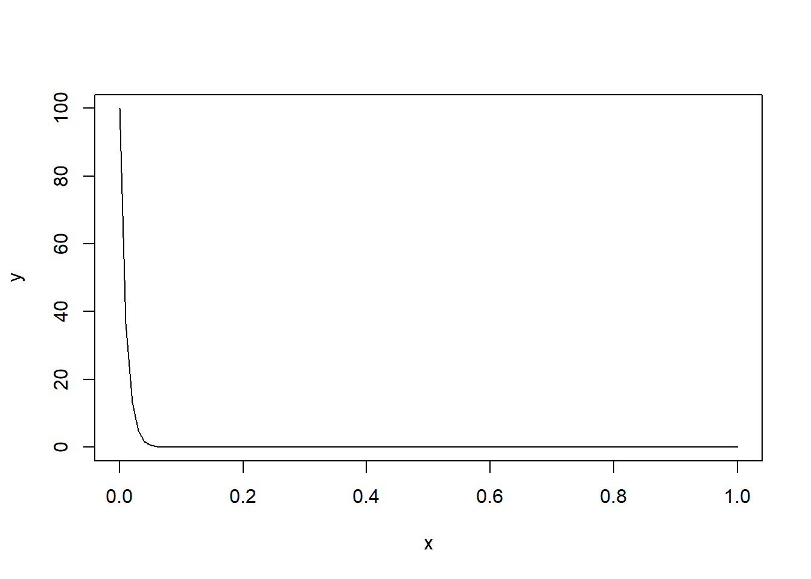
What about the distributions of other order statistics, like the median? Is there a way we can cut to the pdf straightaway?
Let \(X_1,\dots, X_n\) be independent and identically distributed continuous random variables with CDF \(F(x)\) and pdf \(f(x)\). The pdf of \(X_{(j)}\) is given by \[ f_{X_{(j)}}(x) = \frac{n!}{(j-1)!(n-j)!} [F(x)]^{j-1} f(x) [1-F(x)]^{n-j} \]
“Proof” (Please note that this is not a real proof) (and why haven’t we used the multinomial distribution, yet?) (and are we going to have to memorize this????)
For the \(j^{\hbox{th}}\) order statistic, \(X_{(j)}\), we have three “buckets” can toss each \(X_i\) into:
Group 1:
Group 2:
Group 3:
Let’s try out this theorem with the exponential distribution.
Example: Let \(X_1,\dots, X_n\) be a random sample from the exponential\((\lambda=5)\) distribution.
So, for a random sample of Exponential(5) random variables
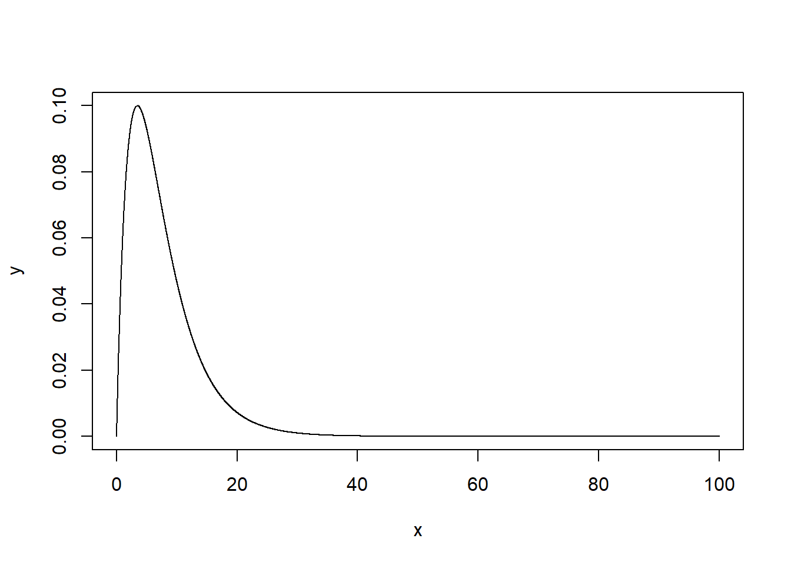
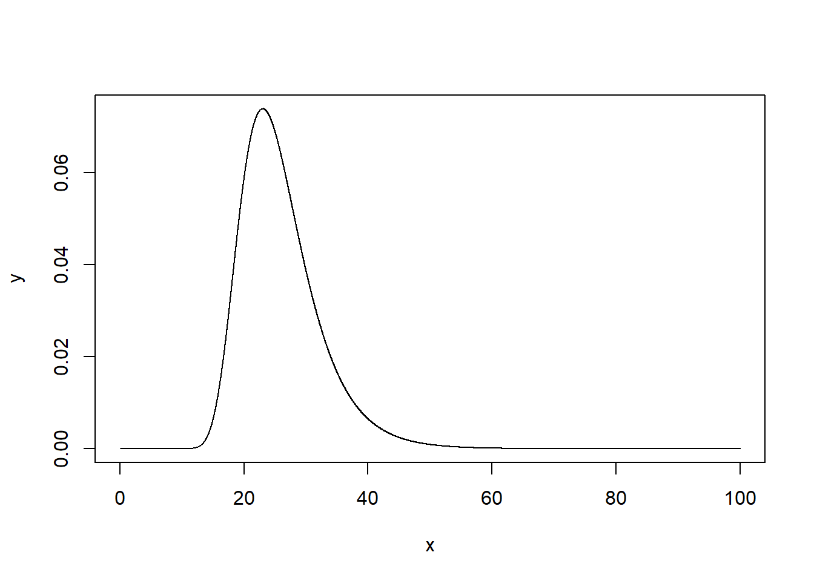
We could also use this logic to find the joint distribution of any two order statistics or the joint distribution of all \(n\) order statistics.